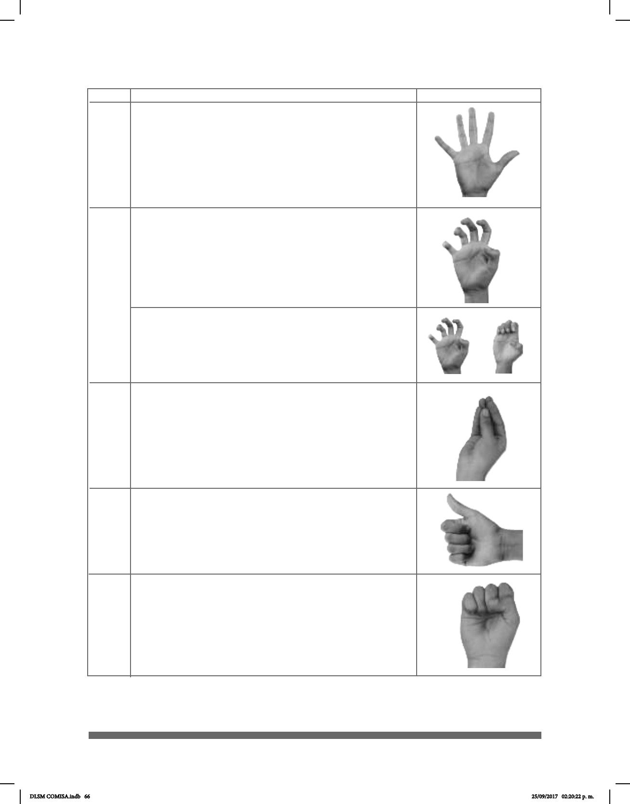

66
CL USO Y SIGNIFICADO IMAGEN
5
• Entidad múltiple, personas en posición vertical
que se desplazan o se encuentran el algún lugar.
También se reere a alas de animales y hélices
de helicópteros.
5
• Cualquier entidad con volumen, como objetos
esféricos: pelotas, balones, esferas. También
puede referirse a entidades con movimiento
circular, como las llaves de agua.
• Escaleras, cercas.
• Objetos agrupados en forma de montón.
...
• Entidad difusa que se expande.
• Objetos nos,como papel o tela.
#
5
• Indica relaciones de acompañamiento o
persecución.
6
• Volante, tubo, cuerda.
A
s
DLSM COMISA.indb 66 25/09/2017 02:20:22 p. m.